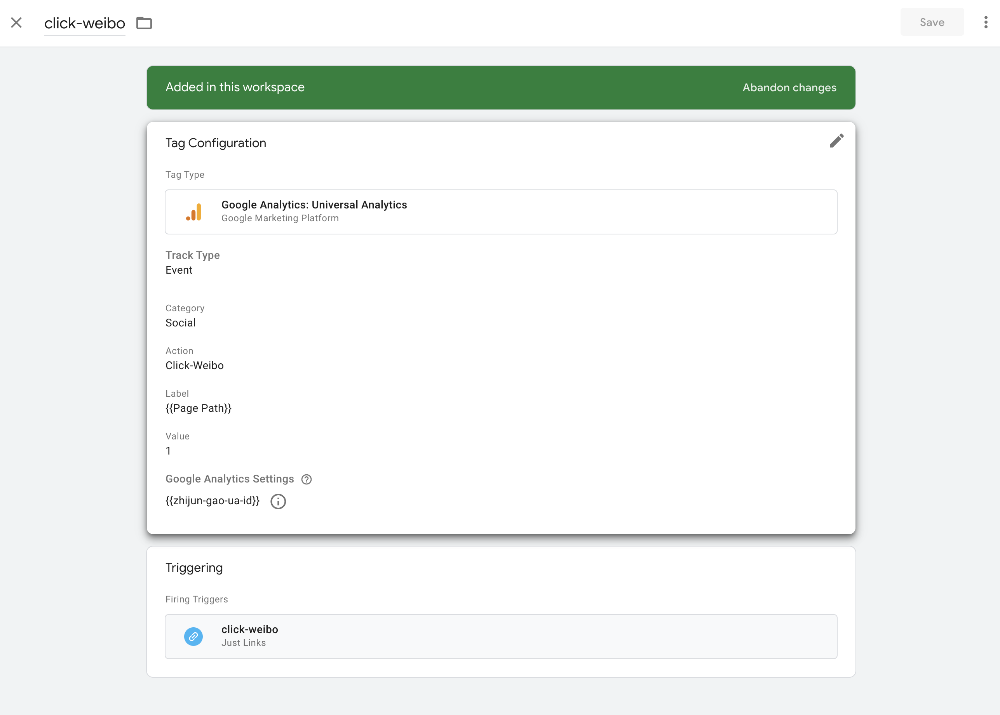
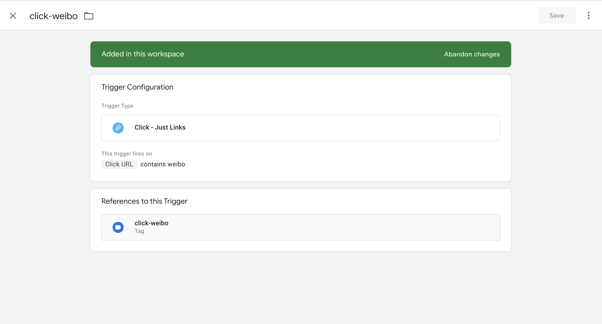
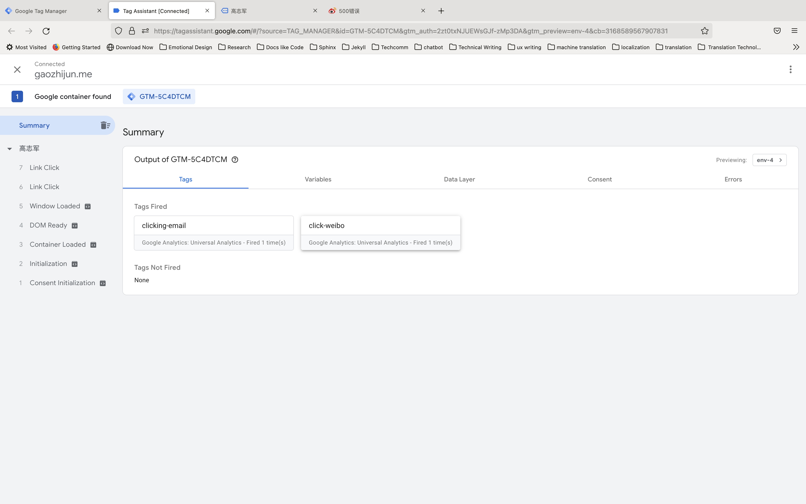

用户行为分析工具¶
使用 分析工具持续性地观察和研究用户行为也是一个非常重要的用户体验研究方法。市面上有大量的分析工具，本文主要介绍 Google Analytics。
其他常用分析工具**
常见指标¶
用户
性别
年龄
地域
浏览顺序
设备操作系统、浏览器、语言
等等
页面
Page Views
Unique Page Views
Sessions
Time on Page
Bounce | Bounce Rate
Exit | Exit rate
Bounce¶
Bounce指跳出，用户从一个页面进来后，然后又走了。跳出率越高，表示整个站点的吸引力不够，无法引导用户进一步探索。但是在一定的场景，例如用户技术文档，一般用户都是需要快速找到所需的内容，然后使用该内容完成任务，这个时候跳出率高反而是好现象。
Exit¶
退出，指的是用户最后离开站点的页面，如果用户是从旅途的末端退出则证明网站设计良好，如果用户在你的作品集那退出，则可以说明一些问题，一般来说作品集是说服读者的关键环节，用户从作品集退出则表明用户没有被吸引。
Google Tag Manger¶
使用 Google Analytics 能统计的信息已经比较多，但是如果需要对用户的行为做更精细的分析和统计，则需要结合Google Tag Manger来分析。
大的步骤：
配置 GTM并跟网站关联
创建 Tag 和 Trigger
测试 GTM，无误后正式追踪
在 Google Analytics 的 Events中查看用户行为数据
例如以追踪我个人网站上，用户是否点击了我的邮箱或微博为例，看如何追踪此类行为。
配置 GTM并跟网站关联¶
（to be updated)
创建 Tag 和 Trigger¶
在
Tags页面，选择New进入Tags创建页面按照提示分别输入 Tag 相关的信息，具体如下图： 
在 Trigger 处配置该标签的触发行为。实现方法有很多种，这里采用 click links, linkes中包含 weibo 作为行为出发的条件。 
在Tag Assistant中测试 Tag¶
点击 Workspage 页面的 Preview 按钮
在弹出的助手窗口中输入需要测试的域名
在弹出的页面，点击weibo按钮，并在 Tag Assistant页面查看是否成功。效果如下图： 